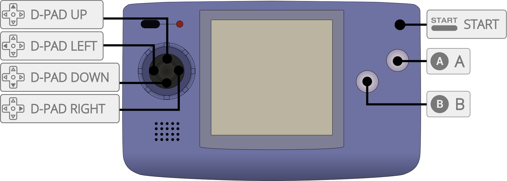

RACE is a Neo Geo Pocket (NGP) and Neo Geo Pocket Color (NGPC) emulator for multiple platforms.
The RACE core has been authored by
The RACE core is licensed under
A summary of the licenses behind RetroArch and its cores can be found here.
Content that can be loaded by the RACE core have the following file extensions:
RetroArch database(s) that are associated with the RACE core:
Frontend-level settings or features that the RACE! core respects.
| Feature | Supported |
|---|---|
| Restart | ✔ |
| Screenshots | ✔ |
| Saves | ✔ |
| States | ✔ |
| Rewind | ✔ |
| Netplay | ✔ (not link-cable emulation) |
| Core Options | ✔ |
| RetroAchievements | ✔ |
| RetroArch Cheats | ✕ |
| Native Cheats | ✕ |
| Controls | ✔ |
| Remapping | ✔ |
| Multi-Mouse | ✕ |
| Rumble | ✕ |
| Sensors | ✕ |
| Camera | ✕ |
| Location | ✕ |
| Subsystem | ✕ |
| Softpatching | ✕ |
| Disk Control | ✕ |
| Username | ✕ |
| Language | ✕ |
| Crop Overscan | ✕ |
| LEDs | ✕ |
The RACE core's internal core name is 'RACE'
The RACE core saves/loads to/from these directories.
Frontend's Save directory
Frontend's State directory
The RACE core has the following option(s) that can be tweaked from the core options menu. The default setting is bolded.
Settings with (Restart) means that core has to be closed for the new setting to be applied on next launch.
Language (restart) [race_language] (english/japanese)
Choose the system language of the BIOS.
The RACE core supports the following device type(s) in the controls menu, bolded device types are the default for the specified user(s):

| User 1 Remap descriptors | RetroPad Inputs |
|---|---|
| A | |
| Option | |
| D-Pad Up | |
| D-Pad Down | |
| D-Pad Left | |
| D-Pad Right | |
| B | |